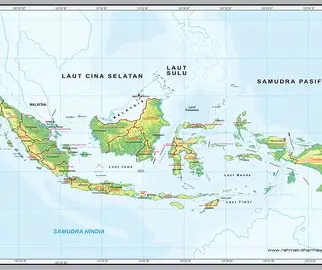

Image Map
Klik bagian tertentu pada gambar untuk menuju ke halaman terkait:

Kesimpulan: Elemen <map> digunakan untuk membuat gambar interaktif yang memiliki beberapa area klik. Bagian-bagian tersebut ditentukan menggunakan tag <area> dengan atribut seperti shape untuk bentuk, coords untuk posisi, dan href sebagai tujuan link. Supaya dapat berfungsi dengan benar, atribut usemap pada tag <img> harus sesuai dengan atribut name pada tag <map>.